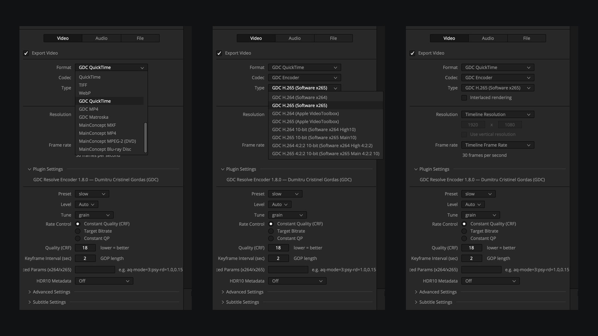
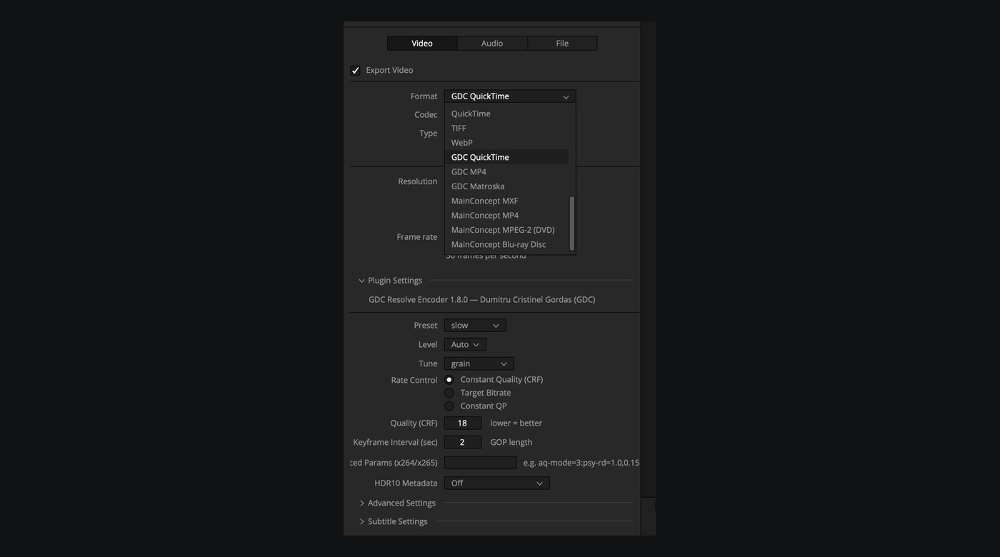

Render in Deliver.
Choose your codec.
A plugin for DaVinci Resolve Studio that adds complete H.264 and H.265 encoders to the Format and Codec lists: 10-bit, 4:2:2, HDR10 and its own containers.

Three new containers in the Format list.
GDC QuickTime, GDC MP4 and GDC Matroska appear in Deliver after the native formats. Color tags and HDR10 metadata are written to the file.
Real capture of the Deliver panel, DaVinci Resolve Studio 21.2.No separate app.
No extra step.
The plugin lives in Deliver. Pick the format, the codec and the settings, then render as usual.
Pick the container.
GDC QuickTime, GDC MP4 or GDC Matroska. All of them write the color tags, PCM audio and, on PQ exports, the HDR10 metadata.

Verified on cinema
camera material.
Every export was compared frame by frame and sample by sample with the source, across 17 exports: full clips and a multi-clip sequence, with sound.
On 10-bit 4:2:0, Resolve 21.2 delivers the picture in a non-planar layout that the plugin now reads correctly. Version 1.7.0 produced a corrupted picture (PSNR 14 dB) at 10-bit 4:2:0.
Delivery quality,
no surprises.
The file holds what you rendered: the same picture, the same sound, the same duration.
Summary of the checks for edition 1.8.0, on an Apple Silicon Mac.
Picture
Comparing with the source shows compression differences only, with no color changes or skipped frames.
Sound
PCM audio is written unchanged. The only differences are the few milliseconds of fade Resolve applies at clip edges.
Reimport
The files reopen in Resolve and in FFmpeg without errors.
An independent plugin.
Not a Blackmagic product.
It works with DaVinci Resolve Studio; the free version does not load export plugins. The plugin runs locally and sends no data anywhere.
Windows is not part of the macOS 1.8.0 edition: the free Windows edition is v1.7.1 (maintenance, see Windows). Development of new Windows features is suspended; contributions are welcome.
GDC Resolve Encoder is an independent project. It is not developed, endorsed or supported by Blackmagic Design. DaVinci Resolve is a trademark of its owner.Download GDC Resolve Encoder.
Free and open source. No account, activation, trial period or mandatory donation: install and render.
macOS — the actively maintained edition
Version 1.8.0 · GDCResolveEncoder-1.8.0.pkg · signed and notarized .pkg installer · 15.3 MB
SHA-256: ed00b95498f3f9e3e11136baf79178f55cfb08f1d1ae44af5d099c8f7d6c0351
Requirements
macOS 26 or later (the minimum declared by the build; verified on macOS 27) · Mac with Apple Silicon · DaVinci Resolve Studio.
Installation
1. Download the package and double-click it.
2. Follow the installer (it asks for your Mac password).
3. Restart DaVinci Resolve, then in Deliver pick Format → GDC QuickTime, GDC MP4 or GDC Matroska, then Codec → GDC Encoder and Type → the variant you want (for example GDC H.265 Software x265).
Open source and contributions
The source code is public: github.com/gordasgdc/gdc-resolve-encoder. The plugin code is MIT-licensed; the Mac package includes FFmpeg, x264 and x265 and is distributed under the GPLv3, with the license texts and the source offer inside the package. Contributions are welcome through Issues and Pull Requests, especially for Windows.
Windows
Windows — free edition v1.7.1 (maintenance), no activation. Actual status: the source is ready and the package is yet to be built in CI, but the test of loading and exporting with picture and sound in DaVinci Resolve Studio on Windows is still missing: I no longer have a Windows system available for verification. The free download appears here as soon as the package is published. Development of new Windows features is suspended; contributions, including the Windows test, are welcome.
Windows v1.7.1 download — awaiting the test
Version 1.7.1 · gdc-resolve-encoder-1.7.1-windows-x64.zip · .zip archive · Windows 10/11, 64-bit
Windows installation (v1.7.1)
1. Unzip the file.
2. Double-click install.bat: it copies the gdc_resolve_encoder.dvcp.bundle folder to %ProgramData%\Blackmagic Design\DaVinci Resolve\Support\IOPlugins\ and asks for administrator rights by itself.
3. Restart DaVinci Resolve Studio.
Terms of use for v1.7.1
Free, with no account, trial period, activation code or mandatory donation; the plugin contacts no server. It starts from v1.7.0 with the licence code removed, with no new features.
The historical v1.7.0 stays in the release archive but requires an activation code: it is not the no-activation edition and is not offered as a download here.
Status
Free edition for macOS. Limits may exist; you can report them on the project page.